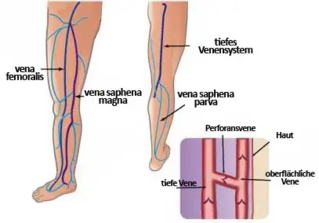
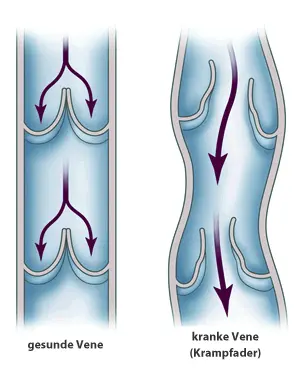
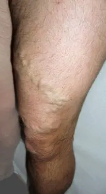
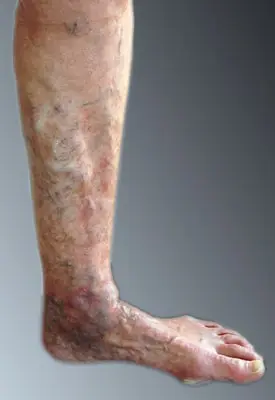
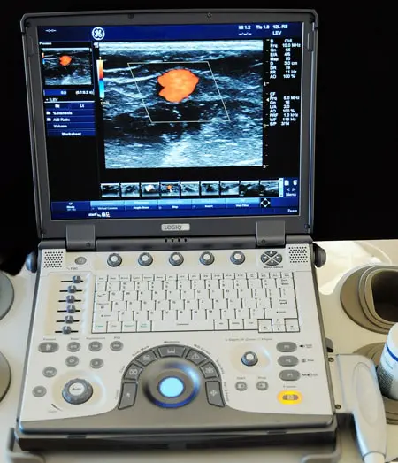
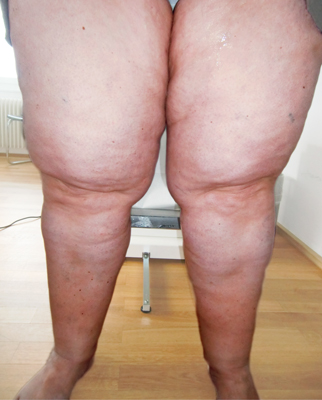

Das System der Venen ist ein Netzwerk von Gefässen aus oberflächlichen und tiefen Venen sowie deren Verbindungen (Perforansvenen). Die Venen transportieren täglich etwa 7.000 Liter sauerstoffarmes Blut – meist entgegen der Schwerkraft – zum Herzen zurück.
90 % des Blutes wird in den tiefen Venen transportiert, nur 10 % in den oberflächlichen Venen. Daher kann man oberflächliche, kranke Venen auch entfernen.
Krampfadern, medizinisch Varizen genannt, sind krankhaft veränderte Venen dieses Systems. Die wichtigsten oberflächlichen Stammvenen sind:
… mit ihren jeweiligen Seitenästen.


In gesunden Venen ermöglichen sich öffnende und schliessende Klappen den Transport des Blutes gegen die Schwerkraft zurück zum Herzen. Verlieren diese Klappen ihre Schliessfähigkeit, kommt es zum Rückfluss (Reflux). Dadurch weiten sich die Venen, werden länger und verlaufen geschlängelt – das typische Bild der Krampfadern (Varikose).
Zusätzliche Faktoren wie Alter, Geschlecht (Frauen sind häufiger betroffen), Schwangerschaften und Übergewicht begünstigen die Ausbildung von Krampfadern oder können das Leiden verschlimmern. Warum manche Menschen Krampfadern entwickeln und andere nicht, ist bis heute ungeklärt.
Mit der Zeit führt der chronische Überdruck zu vermehrtem Austritt von Flüssigkeit, Eiweiss und Blutkörperchen in das umgebende Gewebe. Dies hat Entzündungen, Schwellungen (Ödeme), Verhärtungen (Sklerosen) und bräunliche Verfärbungen (Hyperpigmentationen) der Haut zur Folge – hauptsächlich in der sogenannten Gamaschenzone oberhalb des Sprunggelenks.
Entzündungen in diesen kranken Venen führen zu oberflächlichen Beinvenenthrombosen (Varikophlebitis), was in seltenen Fällen eine tiefe Beinvenenthrombose und Lungenembolie zur Folge haben kann. Bei lang andauernden Verläufen können Haut- und Fettgewebe so schlecht durchblutet sein, dass es zu einem offenen Bein (ulcus cruris) kommen kann.


Rezidivvarizen sind Krampfadern, die nach erfolgter Therapie nach Monaten oder Jahren wieder auftreten. Die Häufigkeit liegt bei etwa 20 %. Rezidive können direkt aus der Leiste oder Kniekehle kommen oder nur Seitenäste an Ober- und Unterschenkel betreffen. Ursache ist eine genetische Veranlagung; auch eine nicht sachgerecht durchgeführte Therapie kann der Grund sein.
Je nach Befund können diese neu auftretenden Varizen mittels Operation (Rezidivoperation in der Leiste), Phlebektomie oder Schaumsklerotherapie behandelt werden – auch endovenöse Verfahren wie Lasertherapie oder ClosureFast kommen in Frage.
Der Goldstandard der Diagnostik in der Phlebologie ist heute neben der Anamnese und der klinischen Untersuchung die farbcodierte Duplexsonographie (Ultraschall). Mit ihr lassen sich die Stadien der venösen Erkrankung genau feststellen und ein Therapieplan festlegen – auch Therapieerfolg und Verlauf können überprüft werden.
Die Diagnostik ist die Grundlage des individuellen Therapieplans, der je nach Patient sehr unterschiedlich sein kann. Einflussfaktoren sind unter anderem die genetische Disposition, das Alter, die Lebensumstände, der allgemeine Gesundheitszustand sowie Ausprägung, Verlauf und Grösse der erkrankten Venen.

Als Lipödem (Lipohyperplasia dolorosa) bezeichnet man eine schmerzhafte Fettgewebsvermehrung unter der Unterhaut, hauptsächlich an den Beinen, selten auch an den Armen. Es tritt vornehmlich bei Frauen auf.
Charakteristisch: disproportionale Fettgewebsvermehrung an Beinen und/oder Armen (die Füsse sind nicht betroffen), Schweregefühl und Schmerzhaftigkeit, Neigung zu blauen Flecken, Zunahme der Beschwerden im Tagesverlauf. Die Ursache ist bis heute unklar; eine genetische Veranlagung wird vermutet.
Ausschlaggebend ist eine nachhaltige Gewichtsabnahme in Kombination mit einer kohlenhydratarmen, proteinreichen Ernährung sowie Bewegungstherapie (Ausdauertraining).

Beim Lymphödem handelt es sich um meist unsymmetrisch auftretende, proteinreiche Wassereinlagerungen im Gewebe – eine chronische Erkrankung. Sie tritt auf, wenn die Lymphgefässe geschädigt sind oder der Transport der Lymphflüssigkeit mechanisch behindert wird.
Nach genauer Untersuchung und Behandlung der Primärerkrankung ist die Komplexe Physikalische Entstauung die wichtigste Massnahme: professionelle manuelle Lymphdrainage, anschliessende Kompression und intensive Hautpflege, ergänzt durch Bewegungstraining. Da es sich um eine chronische Erkrankung handelt, ist die Therapie kontinuierlich erforderlich.